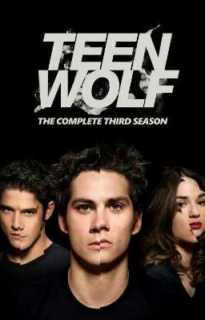

Дилан О’Брайен
Дата рождения: 26 августа 1991. Полных лет: 33. Снялся в 54 фильмах. Снимался в фильмах разных жанров.
Лучшие фильмы/сериалы

Волчонок
Бегущий в лабиринте
Наемник
Глубоководный горизонт

Кадры

Любовь и монстры
Не в порядке
Бесконечность
Доп.информация
Награды за фильм Бегущий в лабиринте
- Победитель:
- Номинация Лучшая роль в стиле «Напуган до чертиков» (Дилан О’Брайен)
- Премия канала «MTV» (2015);
- Прорыв года(Дилан О’Брайен);
- лучшая мужская роль (Дилан О’Брайен);
- лучшая драка
- Номинация:
- Лучшая роль в стиле «Напуган до чертиков» (Дилан О’Брайен)
Интересные факты
- Свою карьеру будущий актёр начал со съёмки видео , несущие комедийный характер, в Youtube. Благодаря своей харизме и обаятельности его признали и он постепенно начал набирать популярность .
- В сериале "Волчонок" ему предложили главную роль ,но сам Дилан О'Брайен решил ,что ему больше подойдёт роль лучшего друга главного героя - Стайлза .В нём он нашёл много схожих черт с собой и стоит признать эта роль очень хорошо ему далась .
- Является забавным фактом что Дилан везде носит с собой свою подушку потому что как он сам выразился "не может без неё спать "
- Дилан О'Брайен раньше выступал ударным в группе "Slow Kids At Play" .
| Год | Название на русском | Оригинальное название | роль |
|---|---|---|---|
| 2005 | Превосходство Борна | The Bourne Supremacy | Главная роль |
| 2005 | Определяющая черта | Into the Blue | Второстепенная роль |
| 2006 | Лёд в сердце | Ice Age: The Meltdown | Второстепенная роль |
| 2007 | Пираты Карибского моря: На краю света | Pirates of the Caribbean: At World's End | Главная роль |
| 2008 | Харти Тейлор | The Dark Knight | Главная роль |
| 2008 | Заложница | Taken | Второстепенная роль |